사회조사분석사-2급 (2008-03-02 기출문제)
1과목: 조사방법론 I
1. 다음 중 우편조사의 시행이 어려운 경우는?
- 조사대상의 질적 수준이 높을 때
- 조사사항이 간단할 경우
- 예산제약이 클 경우
- 응답내용을 정확히 파악해야 할 경우
(정답률: 67%)

2. 1매의 조사표에 2인 이상의 조사내용을 기입하는 연기식 조사표보다 1매의 조사표에 1인의 조사내용을 기입하는 단기식 조사표의 장점은?
- 집계를 위하여 부호를 기입할 경우 인력이 적게 소요된다.
- 조사사항의 비밀을 보호할 수 있다
- 조사표 매수가 적다
- 조사표가 개인별로 독립되어 있어 관련 심사가 가능하다.
(정답률: 48%)
3. 다음 중 변수에 대한 설명으로 맞는 것은?
- 하나의 범주만으로 구성된 변수도 있을 수 있다 .
- 시간이 흐름에 따라 변하지 않는 것은 변수가 아니라 상수이다.
- 독립변수의 결과인 동시에 종속변수의 원인이 되는 변수가 외적변수이다.
- 독립변수와 종속변수 사이에는 둘 이상의 매개 번수가 있을 수 있다.
(정답률: 49%)
4. "1인당 국민소득(GNP)이 올라가면 출생률 즉 인구 1000명 당 신생아의 수는 감소한다”는 주장을 검증하기 위하여 국가별 통계자료를 수집한다고 할 때, “출생률”은 다음 중 어떤 변수인가?
- 매개변수
- 독립변수
- 외적변수
- 종속변수
(정답률: 74%)
5. 다음 중 우편조사를 실시할 때 설문지의 회수율을 높이기 위해 사용하는 방법으로 옳지 않은 것은?
- 설문지를 발송하기 전에 응답자와 우편이나 전화를 통해 사전에 접촉을 한다.
- 표지에 조사를 실시하는 기관에 관한 정보를 포함 하지 않는다.
- 반송용 봉투와 우표를 사용한다
- 빠른 우편을 사용한다
(정답률: 79%)
6. 다음 중 초점집단토론(focus group discussion)의 기법을 구성하는 필수적인 요소가 아닌 것은?
- 토론 참석자
- 기록수단(녹음기 또는 캠코더)
- 사회자
- 이해관계가 없는 청중
(정답률: 80%)
7. 참여관찰(participant observation)에 대한 설명으로 틀린 것은?
- 연구설계의 과정에서 융통성이 높다.
- 양적자료이기 때문에 대규모 모집단에 대한 기술이 쉽다.
- 연구설계 및 착수가 용이하다.
- 직접 참여해서 현상을 관찰·기술하는 방법이다.
(정답률: 74%)
8. 질문의 초안이 작성되면 마지막 단계에서 질문지의 문제점을 찾아내기 위해서 하는 조사는?
- 전수조사
- 사전검사
- 표본조사
- 사후검사
(정답률: 78%)
9. 자료수집방법에 대한 비교설명으로 맞는 것은?
- 인터넷 조사는 우편조사에 비해서 비용이 많이 소요된다.
- 전화조사는 면접조사에 비해서 시간이 많이 소요된다.
- 인터넷 조사에서는 시각보조자료의 활용이 곤란하다.
- 면접조사는 다른 조사에 비해 라포(rapport)의 형성이 용이하다.
(정답률: 82%)
10. 다음 중 특정 조사대상을 사전에 선정하고 이들을 대상으로 반복조사를 실시하는 방법은?
- 패널조사
- 추세조사
- 횡단조사
- 코호트조사
(정답률: 71%)
11. 연구의 단위(unit)를 혼동하여 집합단위의 자료를 바탕으로 개인의 특성을 추리할 때 저지를수 있는 오류는?
- 집단주의 오류
- 생태주의 오류
- 개인주의 오류
- 환원주의 오류
(정답률: 55%)
12. 다음 중 온라인조사의 방법에 해당하지 않는것은?
- 데이터베이스조사(database survey)
- 전자우편조사(e‐@mail survey)
- 웹조사(HTML form survey)
- 다운로드조사(downloadable survey)
(정답률: 63%)
13. 외국인 노동자의 도입에 대한 찬성유무를 묻는 질문 중 가장 잘못된 부분은?
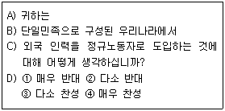
- A
- B
- C
- D
(정답률: 79%)
14. 우편조사에서 비슷한 응답항목이 지나치게 많아 어떤 질문이건 첫번째 응답항목을 선택하는 위험성이 있는 효과는?
- 1차 정보효과
- 최근 정보효과
- 동조효과
- 후광 효과
(정답률: 67%)
15. 자료수집을 위한 사전검사에서 검토할 사항이 아닌 것은?
- 응답에 일관성이 있는지의 여부를 검토한다
- 한쪽으로 치우치는 응답이 나오거나 질문순서의 변화에 따른 반응의 변화를 검토한다
- 응답거부나 “모른다”라는 항목에 표시한 경우 가 많은지 여부를 검토한다
- 보다 나은 결과를 얻기 위하여 대규모 표본조사를 실시한다.
(정답률: 78%)
16. 다음과 같은 특성을 가진 자료수집방법은?
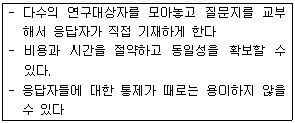
- 면접조사
- 전화조사
- 우편조사
- 집단조사
(정답률: 77%)
17. 다음은 질문지 작성 원칙 중 무엇이 결여되어 발생된 현상인가?
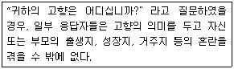
- 간결성
- 명확성
- 단순성
- 가치중립성
(정답률: 83%)
18. 어느 제조업 공장에 근무하는 현장 사원들과 관리자들간에 유지되고 있는 사회적 관계의 특성을 규명하기 위해 참여 관찰인 현장조사를 실시할 경우 다음 중 이러한 연구의 장점이 아닌 것은?
- 조사과정의 유연성
- 조사결과의 신뢰성
- 가설도출의 탐색적 연구
- 조사비용의 저렴
(정답률: 40%)
19. 다음 중 분석단위의 성격이 다른 것은?
- 남성은 여성보다 외부에서 활동하는 시간이 많아 교통사고의 피해자나 가해자가 될 확률이 더 높다.
- A지역의 투표자들은 B지역의 투표자들에 비하여 X정당 후보자를 지지할 의사가 더 많다
- A기업의 회장은 B기업의 회장에 비하여 성격 이 훨씬 더 이기적이다
- 선진국의 근로자들과 후진국의 근로자들의 생산성을 국가별로 비교한 결과 선진국의 생산성이 더 높았다
(정답률: 51%)
20. 다음 중 질문 작성의 원칙으로 틀린 것은?
- 특수용어의 사용을 피한다
- 감정적인 용어의 사용을 피한다.
- 이중구조 질문을 하지 않는다.
- 응답범주를 비대칭적으로 구성한다
(정답률: 70%)
21. 0n-line 조사에 대한 설명으로 틀린 것은?
- 표본의 대표성이 아주 높은 편이다.
- 복수응답의 가능성을 배제할 수 없다.
- 컴퓨터 통신망상에서 이루어지는 형태의 사회조사이다.
- 면접조사, 우편조사, 전화조사 등의 전통적인 방법에 비해 짧은 시일내에 비교적 저렴한 비용으로 실시할 수 있다.
(정답률: 76%)
22. 개방형 질문(open-ended questions)을 이용하기에 적절하지 못한 경우는?
- 응답자들의 지식수준이 높아 면접자의 도움 없이 독자적으로 응답할 수 있는 경우
- 응답자에 대한 사전지식의 부족으로 응답을 예측할 수 없는 경우
- 특정 행동에 대한 동기조성과 같은 깊이 있는 내용을 다루고자 하는 경우
- 숙련된 전문 면접자보다 자원봉사자에 의존하여 면접을 실시하는 경우
(정답률: 65%)
23. 질문의 순서에 관한 설명으로 틀린 것은?
- 응답하기 쉬운 질문을 먼저 한다.
- 일반적인 질문은 특별한 질문의 뒤에 배치한다
- 민감한 질문이나 개방형 질문은 뒷부분에 배치한다.
- 객관적인 사실에 관한 질문에서부터 시작하여 의견이나 동기 등을 묻는 질문으로 옮겨 가는 것이 좋다.
(정답률: 70%)
24. 질문지의 표지에 인사말을 넣을 때 반드시 포함하지 않아도 되는 것은?
- 조사의 목적
- 연구자의 소속과 연락처
- 조사과정
- 비밀 보장
(정답률: 63%)
25. 지역, 계층, 성 등으로 구분하여 소수로 각 범주별 조사 중 대상을 뽑아 특정 주제를 중심으로 대상자의 의견을 수집하는 방법은?
- 현지조사법
- 비 지시적 면접
- 표적집단면접
- 델파이조사
(정답률: 62%)
26. 다음 중 조작적 정의가 필요한 이유로 옳은것은?
- 개념을 가시적이고 경험적으로 표현하기 위하여
- 이론의 구체성을 줄이기 위하여
- 개념의 의미를 풍부하게 하기 위하여
- 연구결과를 조작하기 위하여
(정답률: 62%)
27. J. S. Mill이 제시하는 인과관계 추론의 조건이 아닌 것은?
- 공간적 일치의 원칙
- 동시변화성의 원칙
- 차이성의 원칙
- 공통성의 원칙
(정답률: 49%)
28. 질적연구에 관한 설명으로 옳지 않은 것은?
- 정보의 출처나 자료수집방법을 다양하게 한다
- 개방형 질문을 통해 심층적인 정보를 얻어 낸다
- 조사 초기에 설정한 분석틀을 도중에 변경해서는 안된다.
- 연구과정에서 자료를 분석해가면서 자료를 범주화한다.
(정답률: 66%)
29. 성전환에 대한 일반 국민의 의식을 조사하는 설문지를 만들 때 가장 주의해야 할 사항은?
- 규범적 응답의 억제
- 복잡한 질문의 회피
- 평이한 언어의 사용
- 즉시적 응답 유도
(정답률: 64%)
30. 가설구성 시 고려할 사항이 아닌 것은?
- 경험적 검증이 가능하여야 한다.
- 다른 가설 및 이론과의 연관성을 가져야 한다
- 두 개 이상의 변수들 간의 관계로 서술 되어야 한다.
- 한 가설에 독립변수나 종속변수 수가 많도록 한다.
(정답률: 71%)
2과목: 조사방법론 II
31. 언어장애 아동들에 대해 언어능력 정도를 측정하고, 6개월 동안 언어치료를 한 후 다시 언어능력 정도를 측정하여, 사전사후검사 결과를 비교하여 언어치료의 효과를 분석하는 실험설계 유형은?
- 시계열분석(time series analysis)
- 정태적 집단비교(static group comparison design )
- 통제집단 사후검사(posttest-only control group design)
- 단일집단 사전사후검사(one group pretest-posttest design)
(정답률: 65%)
32. 다음 중 비확률표본추출의 특징으로 맞는 것은?
- 무작위적 표본추출이 가능하다
- 모수 추정에 바이어스(Bias)가 없다
- 시간과 비용이 적게 든다.
- 표본오차의 추정이 가능하다
(정답률: 56%)
33. 표본의 크기에 영향을 미치지 않는 것은?
- 유의수준으로 대변되는 정확도
- 신뢰구간
- . 모집단인구의 특성
- 조사대상 지역의 지리적 여건
(정답률: 67%)
34. 태도척도에서 부정적인 극단에는 1점을, 긍정적인 극단에 5점을 부여한 후, 전체문항의 총점 또는 평균을 가지고 태도를 측정하는 척도는?
- 서스톤 척도
- 리커트 척도
- 거트만 척도
- 의미분화척도
(정답률: 70%)
35. 다응 중 비표본오차의 특징이 아닌 것은?
- 표본의 면접과정에서 발생될 수 있는 실수로 야기 된다
- 자료의 입력과정에서 야기되는 오류에서 비롯 된다.
- 질문지나 조사표의 작성과정에서 발샘하는 오류에서 비롯된다.
- 일반적으로 표본의 크기가 작으면 표본오차는 증가하지만, 비표본오차는 감소한다.
(정답률: 54%)
36. 척도구성의 통계적 기법으로 틀린 것은?
- 개별문항과 척도간의 상관분석
- 개별문항들에 대한 요인분석
- 개별문항에 대한 평균값과 표준편차의 산출
- 문항별 기준변수와의 상관관계 분석
(정답률: 49%)
37. 단순무작위 표본추출에 대한 설명으로 틀린 것은?
- 난수표를 이용하는 표본추출방법이다.
- 모집단을 가장 잘 대표하는 표본추출방법이다
- 모집단의 모든 조사단위에 표본으로 뽑힐 기회를 동등하게 부여한다.
- 모집단의 구성요소를 정확히 파악하여 명부를 작성하여야 한다
(정답률: 62%)
38. 리커트 척도의 장점이 아닌 것은?
- 항목의 우호성 또는 비우호성을 평가하기 위해 평가자를 활용하므로 객관적이다.
- 적은 문항으로도 높은 타당도를 얻을 수 있어서 매우 경제적이다.
- 응답 카테고리가 명백하게 서열화되어 응답자에게 혼란을 주지 않는다.
- 응답자료에서 지표를 추출하여 구성하는 체계적이고 세련된 기법이다.
(정답률: 45%)
39. 다음 중 계통표본추출의 설명으로 맞는 것은?
- A지역 인구를 5명씩, B지역 인구를 역시 5명씩 표집한다.
- 주소록에 등재된 이름을 등재순서에 따라 매 5번째 이름마다 표집한다.
- 출석부에 기재된 학샘 50명 중 5번부터 35번 까지 모두 표집한다.
- 신장에 따라서 순서대로 등재되어 있는 징병 대상 청년들을 10명씩 표집한다.
(정답률: 62%)
40. 입사시험의 타당도를 시험점수와 입사 후 업무수행 우수성 간의 관계에 의해 파악한다면, 어떤 유형의 타당도인가?
- 내용타당도
- 동시타당도
- 구성타당도
- 예측타당도
(정답률: 21%)
41. 층화표본추출(stratified sampling)의 표본 배분법이 아닌 것은?
- 최적배분법
- 비례배분법
- 할당배분법
- 네이만배분법
(정답률: 55%)
42. 조사대상자들의 종교를 불교, 기독교, 가톨릭, 기타의 범주로 나누어 관찰한 경우 측정 수준은?
- 명목척도
- 서열척도
- 등간척도
- 비율척도
(정답률: 64%)
43. 다음 설명에 포함되어 있는 내적 타당도 저해요인은?
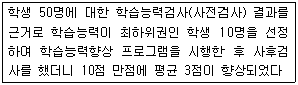
- 역사요인
- 실험 대상의 변동
- 통계적 회귀
- 선정요인
(정답률: 58%)
44. 측정도구의 타당도 평가방법에 대한 설명으로 틀린 것은?
- 한 측정치를 기준으로 다른 측정치와의 상관 관계를 추정한다
- 크론바하 알파값을 산출하여 문항상호간의 일관성을 측정한다
- 내용타당도는 점수 또는 척도가 일반화하려고 하는 개념을 어느 정도 잘 반영 해주는 가를 의미한다
- 개념타당도는 측정하고자 하는 개념이 실제로 적절하게 측정되었는가를 의미한다.
(정답률: 51%)
45. 다음 중 인종 또는 민족에 대한 사회심리적 거리를 측정하기 위해 친밀성의 정도에 따라 문항을 서열적으로 구성하는 척도는?
- 서스튼척도
- 리커트척도
- 거트만척도
- 사회도표
(정답률: 48%)
46. 층화무작위표본추출법과 군집표본추출법에 대한 설명으로 틀린 것은?
- 확룰표본추출법이다
- 모집단의 모든 요소가 추출될 확률이 동일하다.
- 표본추출의 단위가 모집단의 요소이다
- 군집표본추출법은 층화무작위표본추출법과는 달리 가급적이면 군집을 이질적인 요소로 구성 한다
(정답률: 38%)
47. 서스톤의 유사동간법에 관한 설명으로 맞는것은?
- 문항구성 시 긍정, 부정이 뚜렷한 문항만 포함하도록 한다.
- 조사대상자 외에 판단자(평가자)를 별도로 사용하지 않는다.
- 조사자의 응답만으로 조사결과를 분석할 수 있다는 장점이 있다.
- 문항선정 시 사분편차(제3사분위수-제1사분위수)가 작은 문항을 선정한다.
(정답률: 56%)
48. 총화평정척도에 대한 설명으로 틀린 것은?
- 예비적 문항의 선정 단계를 거쳐서 최종의 척도를 구성하는 이중단계를 거친다
- 평가자의 주관이 개입될 가능성이 크다
- 리커트 척도라고도 한다.
- 전체 문항에 대한 응답의 총 평점이 태도의 측정치가 된다.
(정답률: 53%)
49. 신뢰도 측정방법 중 크론바하 알파(Cronbach's Alpha)에 관한 설명으로 옳은 것은?
- 한 척도에 여러 개의 크론바하 알파 값이 있다 .
- 문항 수가 적을수록 크론바하 알파 값은 커진다.
- 각 문항들이 서로 상관관계가 없다는 논리에 근거하고 있다.
- 신뢰도가 낮을 경우 신뢰도를 낮게 하는 문항을 찾아낼 수 있다.
(정답률: 60%)
50. 조사도구의 신뢰도를 평가할 때 안정성 기준과 관련이 있는 것으로 동일한 개념을 두시점에서 각각 측정하여 이들이 어느 정도 상관관계가 높은가를 보고 신뢰도를 평가하는 밤법은?
- 내적 일관성법
- 반분법
- 재조사법
- 최소 자승법
(정답률: 55%)
51. 거트만척도 작성에서 총 15명의 응답자가 총 7개 질문항목의 척도화 가능성을 알아본 결과 일관성 없는 응답을 한 총 착오점수(error scores)가 5였다 재생가능계수(CR)의 값은?
- 0.33
- 0.57
- 0.80
- 0.95
(정답률: 42%)
52. 표집(표본추출)과 관련된 용어 설명으로 틀린것은?
- 통계치(statistic)-모집단 내 변수의 값
- 모집단(population)-연구하고자 하는 이론상의 전체 집단
- 표본(sample)-(연구)모집단 중 연구대상으로 추출된 일부
- 표본오차(sampling error)-표본 수치와 모집단 수치의 차이
(정답률: 59%)
53. 다음 중 측정오차의 원인이 아닌 것은?
- 측정자의 잘못 때문이다.
- 측정자나 피측정자가 지니는 지적 사고력이나 판단력에 기인한다.
- 측정소재의 관련이나 시·공간의 제약 때문이다.
- 사회과학에서 측정오차발생은 예외적 현상이다
(정답률: 57%)
54. 측정의 수준에 따라 여러 가지 척도를 나눌때, 어느 척도에서든지 그 하위범주가 반드시 충족시켜야 하는 특성은?
- 하위범주들의 서열성
- 하위범주들의 상호배제성과 포괄성
- 하위범주간 간격의 등간성 혹은 표준 특정단위의 존재
- 하위범주값에서 절대적인 영(0)값
(정답률: 64%)
55. 실험설계를 포기하고 유사실험설계를 시행해야 하는 경우는?
- 실험 및 통제집단의 난선화가 가능할 때
- 내·외적 타당도 저해요인을 통제할 수 있을 때
- 통제집단을 구성하기 불가능할 때
- 독립변수의 인위적 조작이 불가능할 때
(정답률: 47%)
56. 어느 검사의 신뢰도가 1로 나왔다면 측정의 표준오차는?
- 검사 점수의 표준편차와 같다.
- 표준편차의 제곱근과 같다
- 0 이다
- 1 이다
(정답률: 57%)
57. 소득실태조사를 위해 A시의 구(區) 중 3개구를 선정한 후, 선정된 각 구에서 다시 3개 동(洞)을 선정하여 선정된 동의 모든 주민을 조사대상자로 하는 표집방법은?
- 층화표집
- 집락표집
- 할당표집
- 임의표집
(정답률: 53%)
58. 주로 인종이나 민족, 가족구성원이나 사회집단간의 사회 심리적 거리감을 측정하기 위하여 개발된 것으로 사회적 거리척도라고도 하는 척도는?
- 서스톤 척도
- 리커트 척도
- 보거더스 척도
- 거트만 척도
(정답률: 64%)
59. 자동차의 수명을 조사하기 위하여 100개의 표본을 선정 하여 조사한 결과 최저 36개월, 최고 120개월로 나타났다면 자동차 수명의 범위(range)는?
- 5년
- 6년
- 7년
- 8년
(정답률: 69%)
60. 사회조사분석에서 척도를 사용하는 목적으로 옳지 않은 것은?
- 사회현상은 우리가 관찰하는 것보다 훨씬 복잡한 면이 있다.
- 사회현상에 대한 질적 측정값을 제공하여 통계적 조작으로 불가능한 변수의 심층을 이해 하도록 한다.
- 척도는 여러 개의 지표를 하나의 점수로 나타 내어 자료의 복잡성을 감소시킨다.
- 척도는 측정의 신뢰도를 높이는데 기여한다.
(정답률: 59%)
3과목: 사회통계
61. 다음 표의, x y에 대한 상관계수 설명으로 맞는 것은?
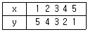
- 완전 양의 상관관계
- 상관이 없다
- 강한 양의 상관관계
- 완전 음의 상관관계
(정답률: 54%)
62. 상관관계(correlation)에 대한 설명 중 옳은 것은?
- 두 변수 간에 강한 상관관계가 존재하면 두 변수는 서로 독립적이라고 한다
- 두 변수 간의 상관관계로부터 인과관계를 도출할 수 있다.
- 두 변수 간에 상관관계가 없다면 피어슨 상관계수의 값은 0이다.
- 피어슨 상관계수의 값은 항상 0 이상 1 이하이다.
(정답률: 50%)
63. 종속변수 Y를 독립변수 x, 과 X2로 설명하는 일반적인 선헝회귀모형은?
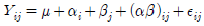
- Y=X1+X2+ε
- Y=α+βX1X2+ε
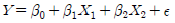
(정답률: 51%)
64. 만일 자료에서 모평균 μ에 대한 95% 신뢰구간이 (-0.042, 0.522)로 나왔다면, 유의수준 0.⑤에서 귀무가설 H0 : μ=0 대 대립가설 H1 : μ ≠ 0의 검증 결과는 어떻게 해석할 수 있는가?
- 신뢰구간과 가설검증은 무관하기 때문에 신뢰구간을 기초로 검증에 대한 어떠한 결론도 내릴 수 없다.
- 신뢰구간이 0을 포함하기 때문에 귀무가설을 기각할 수 없다.
- 신뢰구간의 상한이 0.522로 0보다 상당히 크기 때문에 귀무가설을 기각해야 한다.
- 신뢰구간을 계산할 때 표준정규분포의 임계값을 사용 했는지 또는 t 분포의 임계값을 사용했는 지에 따라 해석이 다르다.
(정답률: 39%)
65. 회귀분석에서 관찰값과 예측값의 차이는?
- 오차(error)
- 편차(deviation)
- 잔차(residual)
- 거리(distance)
(정답률: 37%)
66. 자료 A에 대한 단순회귀분석의 결과
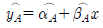
자료 B에 대한 단순회귀분석의 결과로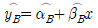
를 얻었다. 그런데 결과적으로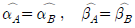
였다고 하자. 그리고 오차분산의 추정값도 같으나 독립변수 X 의 분산이 자료 A보다 자료 B에서 크다고 할 때 다름 중 맞는 것은?(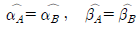
)- Var
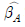
의 추정값 = Var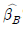
의 추정값 - Var 의 추정값 < Var 의 추정값
- Var 의 추정값 > Var 의 추정값
- 경우에 따라 다르다
(정답률: 24%)
67. A고등학교 1학년 학생 1000명의 성적분포가 평균 80점, 표준편차 20점인 정규분포로 나타났다. 이 경우에 60점 이상 100점 이하의 점수를 얻은 학생은 약 몇 명인가?[단, P(Z≤0.5)=0.68, P(Z≤1.0)=0.84, P( Z≤1.5)=0.93, P(Z≤2.0) =0.98 ]
- 350
- 680
- 790
- 850
(정답률: 38%)
68. “성과 정당지지도 사이에 관계가 있는가?"를 살펴보기 위하여 설문조사를 실시 분석한 결과 Pearson 카이제곱 값이 32.29, 자유도가 2, 유의확률이 0.0000이었다. 이 분석에 근거할 때, 유의수준 0.⑤에서 ”성과 정당 지지도 사이의 관계”에 대한 결론은?
- 위에 제시한 통계량으로는 성과 정당지지도 사이의 관계를 알 수 없다.
- 성과 정당지지도 사이에 유의미한 관계가 있다.
- 성과 정당지지도 사이에 유의미한 관계가 없다
- 남성이 여성보다 정당지지도가 높다.
(정답률: 45%)
69. “학력별로 월평균소득에 차이가 있는가?"를 파악하기 위해 분산분석을 실시하였다. 아래와 같은 통계량을 구하였을 때, 유의수준 0.⑤에서 학력과 월평균소득의 관계에 대한 가설검정의 결과는?
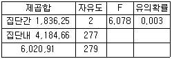
- 학력별로 월평균소득에 차이가 있다.
- . 학력별로 월평균소득에 차이가 없다.
- 위의 결과로는 가설검정을 할 수 없다.
- 남성 대졸학력자가 여성 대졸학력자 보다 월평균소득이 높다.
(정답률: 42%)
70. 확률변수 X가 정규분포
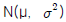
을 따를 때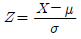
는 어떤 분포를 따르는가?- N(0 , 1)
- N(1 , 1)
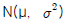
- N(μ , 1)
(정답률: 48%)
71. 자료에 특이값(이상값, outlier)이 일부 섞여 있는 경우에도 비교적 안정적인 산포의 측도는?
- 표준편차
- 분산
- 범위
- 사분위수 범위
(정답률: 48%)
72. 어떤 사회정책에 대한 찬성률 θ를 추정하고자 크기 n인 임의표본(확률표본)을 추출하여 자료를 X1, ‥‥, Xn 으로 입력하였을 때 θ 에 대한 점추정치로 합당한 것은? (단, 찬성이면 0, 반대면 1로 코딩)
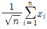
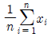
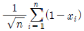
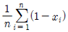
(정답률: 32%)
73. 독립시행의 수가 n, 성공비율이 인 이항 모집단에서 성공 수 x 를 관측하였다. 영 가설과 대립가설을 각각 H0 : θ=0.25, H1 : θ=0.75라고 할 때, p-값(유의확률)은?
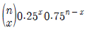
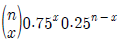
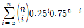
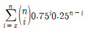
(정답률: 28%)
74. 다음의 분산분석표에서 유의확률(P값) 0.0212값이 의미하는 것은?
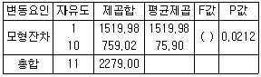
- 5% 수준에서 유의하다
- 1% 수준에서 유의하다.
- 10% 수준에서 유의하다.
- 통계적으로 유의하지 않다.
(정답률: 44%)
75. 귀무가설이 옳음에도 불구하고 대립가설로 잘못 결론을 내리는 오류는?
- 제1종 오류
- 제2종 오류
- 알파오류
- 베타오류
(정답률: 47%)
76. 가설검증에서 오류를 범할 확률의 최대허용치는?
- 유의수준
- 유의확률(P값)
- 오차한계
- 신뢰수준
(정답률: 44%)
77. 짝을 이룬 표본(paired sample)의 t검증과 유사한 비모수 통계기법은?
- Willcoxon 검증
- Mann-Whitney 검증
- Kruskal-Walls 검증
- Kolmogorov-Smirnov 검증
(정답률: 29%)
78. 직업별로 소비자행동에 어떤 차이가 있는지를 보기 위해 취업주부를 대상으로 전문직, 사무직, 생산직으로 나누어 소비성향을 측정하였다. 이 때 소비행동은 여러 개의 문항을 이용하여 연속변수의 척도를 구성하였다. 직업별로 소비행동의 차이가 있는지를 알아보려면 어떤 통계적 분석을 실시하는 것이 가장 적합한가?
- 분할표 분석
- 회귀분석
- 상관관계분석
- 분산분석
(정답률: 38%)
79. 다음과 같이 4가지의 회귀분석의 모델이 있다고 할 때, 이에 관한 설명으로 맞는 것은?
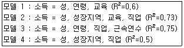
- 모델 3의 R2가 가장 높으므로 네 모델 중 가장 좋은 모델이다.
- 네 모델 중 서로 비교할 수 있는 모델은 모델2와 모델 4뿐이다.
- 모델 3은 모델 4보다 R2가 높으므로 더 좋은 모델이라고 할 수 있다.
- 모델 2를 모델 3과 비교하여 어느 모델이 더 좋은지 판별할 수 있다.
(정답률: 44%)
80. 학생들의 영어교육방법에 따라 영어실력에 차이가 있는지를 비교하기 위해 영어성적이 유사한 학생들을 랜덤하게 3그룹으로 나누어 3가지 교육방법을 실시하였다. 영어교육 방법에 차이가 있는가를 비교하기 위한 다음의 설명 중 틀린 것은?
- 분산분석의 모형은
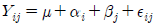
, (i=1, 2, 3, j=1, 2, ... , n) 이다. - 오차항
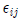
는 서로 독립이고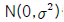
를 따른다 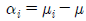
라고 할 때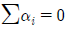
이다.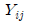
는 서로 독립이고,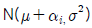
를 따른다
(정답률: 29%)
81. 변량
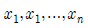
에 대하여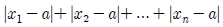
을 최소로 하는 대표값은?- 산술평균
- 중위수(중앙값)
- 최빈수
- 기하평균
(정답률: 36%)
82. 다음에 알맞은 검증방법은?
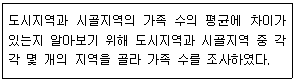
- 독립표본 t-검증
- 더빈 왓슨검증
- x2-검증
- F-검증
(정답률: 32%)
83. 다음의 정규분포에 대한 설명 중 옳은 것은 모두 몇 개인가?
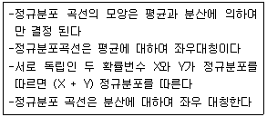
- 1개
- 2개
- 3개
- 4개
(정답률: 38%)
84. 확률번수 X는 평균이 2이고 표준편차가 2인 분포 Y = -2X + 10 의 평균과 표준편차는?
- 6, 4
- 6, 6
- 14, 4
- 14, 6
(정답률: 48%)
85. 변수 X와 Y의 상관계수가 0.1일 때, 2X와 3Y의 상관계수는?
- 0.6
- 0.3
- 0.2
- 0.1
(정답률: 38%)
86. 두 개의 사상 A와 B에 대한 확률의 법칙 중 일반적으로 성립하지 않는 것은?
- P(A) = P(A∩B) + p(A∩BC )
- P(A∪B) = P(A) + P(B) - P(A)·P(B|A)
- P(A∪AC) = 1
- P(A∩B) = P(A)·P(B)
(정답률: 51%)
87. 어느 고등학교 1학년 학생 전체 1000명의 IQ를 조사했더니 평균이 1⑤이고 표준편차가 15로 나타났다. 그 학교 1학년 학생 중 IQ가 75에서 135 사이에 있는 학생은 최소한 몇 명인가?
- 750명
- 850명
- 900명
- 950명
(정답률: 23%)
88. 모든 조건이 동일한 경우 표본의 수를 네 배로 늘릴 때 표본평균의 신뢰구간은?
- 4배로 넓어진다
- 2배로 넓어진다.
- 1/2로 준다
- 1/4로 준다
(정답률: 37%)
89. 인구수가 생산랑에 미치는 영항을 분석하기 위하여 인구수(단위, 100명)를 독립변수, 생산량(단위, 1만원)을 종속변수로 설정하여 회귀분석을 실시하였다 분석결과 다음과 같은 회귀방정식을 구하였을 때, 회귀방정식에 대한 설명으로 맞는 것은?
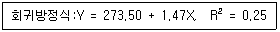
- 인구 수가 0이면, 평균생산량도 0이다
- 회귀선은 곡선형이다
- 인구 수가 100명 증가할 경우에, 평균생산량은 약 1만4천7백원 증가한다
- 회귀방정식에 의하여 인구 수가 생산량을 설명하는 정도는 75%이다
(정답률: 39%)
90. 다음 자료들을 확률변수로 나타냈을 때 이산확률변수가 되는 것은?
- 어느 중학교 학생들의 몸무게
- 습도 80%의 대기 중에서 빛의 속도
- 장마기간 동안 A시 OO구의 강우량
- 어느 프로야구 선수가 한 시즌 동안 친 홈런의 수
(정답률: 53%)
91. 이상점 자료에 대한 설명으로 틀린 것은?
- 상자그림 요약에서 안쪽 울타리를 벗어나는 자료는 이상점 자료이다.
- 이상점 자료는 반드시 제외하고 분석하는 것이 바람직하다.
- 절사평균은 산술평균에 비해 이상점 자료에 덜 민감하다.
- 중위수는 산술평균에 비해 이상점 자료에 덜 민감하다
(정답률: 46%)
92. 단순회귀분석에서 회귀선이
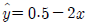
와 같이 주어졌을 때 틀린 것은?- 반응변수는 y이고 설명변수는 x이다.
- 설명변수가 한 단위 증가할 때 반응변수는 2단위 감소한다.
- 반응변수와 설명변수의 상관계수는 0.5이다
- 설명변수가 0일 때 반응변수의 예측값은 0.5이다.
(정답률: 49%)
93. 다음 중 상관계수의 의미로 맞는 것은?
- 두 변수간에 차이가 있는가를 나타내는 측도이다
- 두 변수간의 분산의 차이가 있는가를 나타내는 측도이다.
- 두 변수간의 곡선관계를 나타내는 측도이다.
- 두 변수간의 선형관계를 나타내는 측도이다.
(정답률: 46%)
94. 단순선형회귀모형
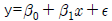
에서 오차항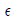
의 분포가 평균이 0이고 분산이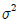
인 정규분포를 따른다고 가정하자. 22개의 자료들로부터 회귀식을 추정하고 나서 잔차제곱합(SSE)을 구하였더니 그 값이 4000이었다. 이 때 분산 의 불편추정값은?- 100
- 150
- 200
- 250
(정답률: 47%)
95. 곤충학자가 70마리의 모기에게 A 회사의 살충제를 뿌리고 생존시간을 관찰하여
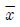
=18.3, s=5.2를 얻었다. 생존시간의 모평균에 대한 99% 신뢰구간은?- 8.6 < μ < 28.0
- 17.1 < μ < 19.5
- 18.1 < μ < 18.5
- 16.7 < μ < 19.9
(정답률: 33%)
96. A 도시에서는 실업률이 5.5%라고 발표하였다. 그러나 관련 민간단체에서는 실업률 5.5%는 너무 낮게 추정된 값이라고 믿고 이에 대해 확인하고자 한다. 노동력인구 중 520 명을 임의 추출하여 39명이 직업이 없음을 알게 되었다. 이 문제에 대한 적합한 검정통계량 값은?
- -2.58
- 1.96
- 2.00
- 1.75
(정답률: 28%)
97. 확률변수 X의 기대값이 5이고, 확률변수 Y의기대값이 10일 때, 확률변수 X+2Y의 기대값은?
- 10
- 15
- 20
- 25
(정답률: 51%)
98. 사건 A가 일어날 확률이 0.5, 사건 B가 일어날 확률이 0.6, A 또는 B가 일어날 확률이 0.8일때, 사건 A와 B가 동시에 일어나는 확률은?
- 0.3
- 0.4
- 0.5
- 0.6
(정답률: 49%)
99. 모표준편차가 =10으로 알려진 정규모집단에서 n=25개의 표본을 랜덤하게 추출한 결과 표본 평균
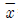
=40이었다. 모평균 μ의 추정값 그림파일 없음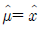
=40 의 95% 오차한계는?[단, Z∼N(0,1)일 때 P(Z>1.96)=0.025, P(Z>1.645)=0.⑤]- 3.29
- 0.658
- 3.92
- 0.784
(정답률: 31%)
100. 가설검정을 할 때 대립가설( )이 사실인 상황에서 귀무가설( )을 기각할 확률은?
- 검정력
- 제2종의 오류
- 유의수준
- 신뢰수준
(정답률: 33%)